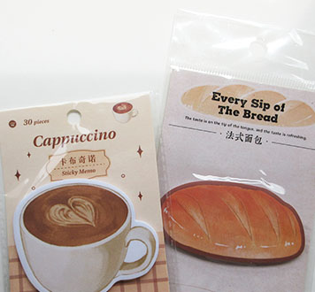
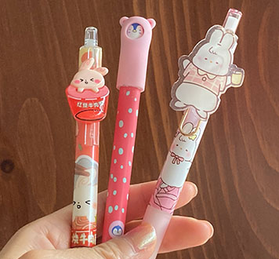
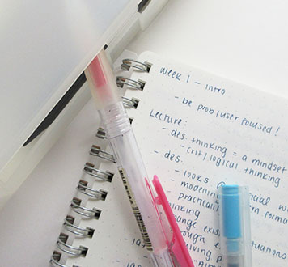
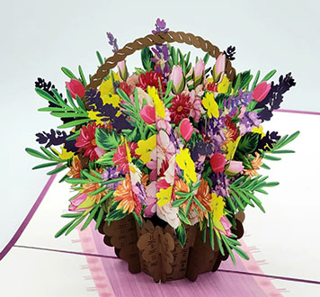
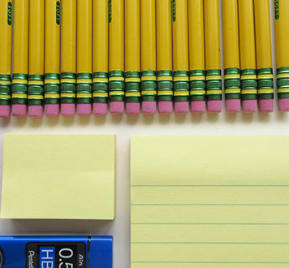
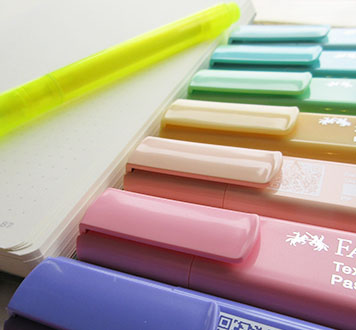

Where I Find Stationary in Toronto (the analog way)
Posted: June 26, 2026
No online-shopping advice here...
- Sarah & Tom
Highlights: Close-ish to Christie station, variety of products
682 Bloor Street W, Toronto, ON M6G 1L2

Some café-themed sticky notes I bought recently
I have no words to describe how much of a dream this place is to me. If you love cute pens, adorable animal-shaped (and cafe-themed) sticky notes, unique stamp sets, anime merch, charms, k-pop, and cute office decor… This place might make you feel the same way.
It’s a small place located in Korea Town, a short walk away from Christie subway station, that’s just a cozy little shop that carries cute stationery you won’t find in the big-box stores.
The prices are fair and you can find unique products you might not be able to find elsewhere.
- Mr. Pen
Highlights: More pens than you could ever dream of
683 Bloor St W, Toronto ON M6G 1L3, Canada

Silly cartoony pens that brighten my day
This place certainly lives up to its name. As soon as you walk in, there is a huge stand of cute and unique pens that will melt your heart.
You can mix and match, customise your pen collection and add on some cute sticky note sets as well.
If you visit with friends, you can also get matching keychains that perfectly describe your friend dynamic (a little expensive but… 👀). If you’re interested in little desk trinkets (think: Smiski, Miffy), there are blind boxes available here that could complete your figurine collection or be great for a small gift.
The space is quite inviting and spacious, so definitely a great place to drop by with friends and family.
- MUJI
Highlights: Offers more than just stationery
20 Dundas Street West, Toronto ON M5G 2C2, Canada

A notebook, pens, and pencil case from my MUJI stash
Located in downtown Toronto in the Atrium building, this location provides convenient and high-quality stationery products for fair prices.
This place allows shoppers to be quite flexible in terms of how much they buy. Shoppers can go in for a singular pen or walk out with packs of them. You also can go for a pack of notebooks or get a mini one that’s great for travel.
The products they typically sell are very minimalist, so it’s a great option for people who want basic stationery without any extra bells and whistles.
- Hanji Gifts
Highlights: unique paper gifts
645 Bloor St W, Toronto ON M6G 1L1, Canada

One of many 3D pop-up cards they sell
Image from hanjigifts.com
Another one located in Korea Town, this small store focuses more on paper-based stationery products. They also sell stamps, but they have some amazing pop-up paper cards that could be a gift in itself for a friend, family member, or colleague. They even have mini-cards that sell for just a few dollars, so these are a great option if you’re looking to save money but still share your sentiments with others in a card.
The place is very cozy and the shelves are full of cute stationery products that will make you lean in to learn more.
While this shop is more geared towards gifts than stationery, you can find some great paper products here for writing and for finding great gifts for others.
- Staples
Highlights: many locations, everyday essentials
(One of many locations): 375 University Ave, Toronto ON M5G 2J5, Canada

Some classic and reliable writing supplies
I don't really have much to say for this one, as it's already quite established. One of the big, well-known, reliable sources for packs of reasonably(?) priced pens, Staples is certainly a good option if you’re looking for good stationery in a pinch.
While it lacks the personality that the above places have, it's a great place to visit if you’re looking for basic products in an easily findable location.
- Indigo
Highlights: many locations, frequently changing stock
(One of many locations): 220 Yonge St, Toronto ON M5B 2H1, Canada

A blank leuchturm1917 notebook alongside some pastel Faber-Castell textliners
Another popular place to buy notebooks and cute stationery, Indigo is another convenient place for buying stationery since they have locations all over the city. They have regular changes in stock that can be great if you’re looking for gifts for teachers, new graduates, mom or dad, and cat/dog lovers.
This place has slightly more unique finds than Staples, but certainly feels less unique than the first 4 locations. I have to say, this place sometimes surprises me with the cute pens and notebooks they sell. They even started carrying cute metallic bookmarks and leather-esque book accessories that look anything but basic (yes, I have bought these products as gifts).
If you’re looking to support Canadian businesses, it’s a great option. But if you want to support local businesses, maybe looking somewhere else would be better.
Highlights: Close-ish to Christie station, variety of products
682 Bloor Street W, Toronto, ON M6G 1L2

I have no words to describe how much of a dream this place is to me. If you love cute pens, adorable animal-shaped (and cafe-themed) sticky notes, unique stamp sets, anime merch, charms, k-pop, and cute office decor… This place might make you feel the same way.
It’s a small place located in Korea Town, a short walk away from Christie subway station, that’s just a cozy little shop that carries cute stationery you won’t find in the big-box stores.
The prices are fair and you can find unique products you might not be able to find elsewhere.
Highlights: More pens than you could ever dream of
683 Bloor St W, Toronto ON M6G 1L3, Canada

This place certainly lives up to its name. As soon as you walk in, there is a huge stand of cute and unique pens that will melt your heart. You can mix and match, customise your pen collection and add on some cute sticky note sets as well.
If you visit with friends, you can also get matching keychains that perfectly describe your friend dynamic (a little expensive but… 👀). If you’re interested in little desk trinkets (think: Smiski, Miffy), there are blind boxes available here that could complete your figurine collection or be great for a small gift.
The space is quite inviting and spacious, so definitely a great place to drop by with friends and family.
Highlights: Offers more than just stationery
20 Dundas Street West, Toronto ON M5G 2C2, Canada

Located in downtown Toronto in the Atrium building, this location provides convenient and high-quality stationery products for fair prices.
This place allows shoppers to be quite flexible in terms of how much they buy. Shoppers can go in for a singular pen or walk out with packs of them. You also can go for a pack of notebooks or get a mini one that’s great for travel.
The products they typically sell are very minimalist, so it’s a great option for people who want basic stationery without any extra bells and whistles.
Highlights: unique paper gifts
645 Bloor St W, Toronto ON M6G 1L1, Canada

Image from hanjigifts.com
Another one located in Korea Town, this small store focuses more on paper-based stationery products. They also sell stamps, but they have some amazing pop-up paper cards that could be a gift in itself for a friend, family member, or colleague. They even have mini-cards that sell for just a few dollars, so these are a great option if you’re looking to save money but still share your sentiments with others in a card.
The place is very cozy and the shelves are full of cute stationery products that will make you lean in to learn more.
While this shop is more geared towards gifts than stationery, you can find some great paper products here for writing and for finding great gifts for others.
Highlights: many locations, everyday essentials
(One of many locations): 375 University Ave, Toronto ON M5G 2J5, Canada

I don't really have much to say for this one, as it's already quite established. One of the big, well-known, reliable sources for packs of reasonably(?) priced pens, Staples is certainly a good option if you’re looking for good stationery in a pinch.
While it lacks the personality that the above places have, it's a great place to visit if you’re looking for basic products in an easily findable location.
Highlights: many locations, frequently changing stock
(One of many locations): 220 Yonge St, Toronto ON M5B 2H1, Canada

Another popular place to buy notebooks and cute stationery, Indigo is another convenient place for buying stationery since they have locations all over the city. They have regular changes in stock that can be great if you’re looking for gifts for teachers, new graduates, mom or dad, and cat/dog lovers.
This place has slightly more unique finds than Staples, but certainly feels less unique than the first 4 locations. I have to say, this place sometimes surprises me with the cute pens and notebooks they sell. They even started carrying cute metallic bookmarks and leather-esque book accessories that look anything but basic (yes, I have bought these products as gifts).
If you’re looking to support Canadian businesses, it’s a great option. But if you want to support local businesses, maybe looking somewhere else would be better.